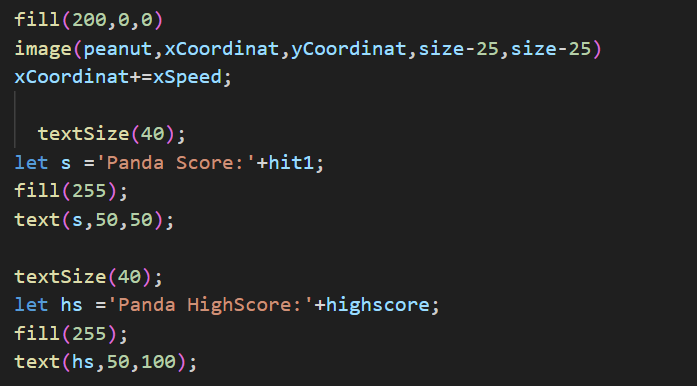
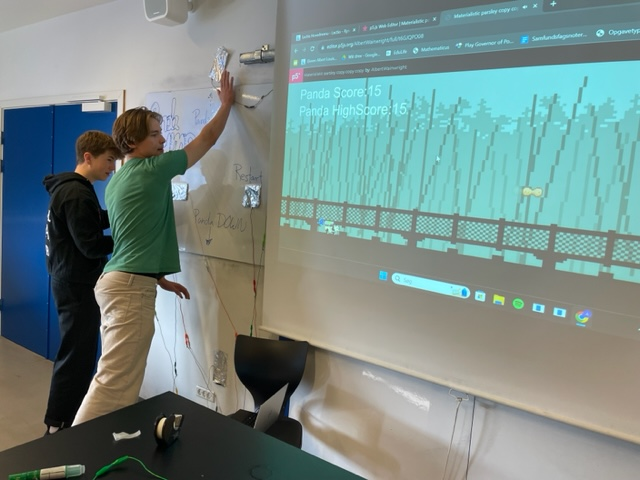

Vi fik til opgave at udvikle et spil der: kan spilles i af to eller flere personer, der fysisk er i nærheden af hinanden, involverer et samarbejdene eller konkurrende element og som styres med Makey Makey
Vi blev inspireret af Goggle Chrome's offline dinusaur spil når man ikke har adgang til internet. Vi valgte dette fordi det virkede relativt simpelt og overskueligt.
Vi opdagede dog at det ikke opfyldte en a kriterierne, nemlig at de skal kunne spilles af mindst 2 personer, derfor valgte vi at én person styrede "dinusaur" eller panda i vores tilfælde mens den anden styrede forhindringerne.
Vi brugte Makey Makey til at lave spillet mere fysisk så måden man skulle bestemme om pandaen skulle op eller ned var ved at hoppe op og bukke sig ned.

Udfra kodestumpen er det muligt at se 3 forskellige elemnter af vores spil: vores peanut (som er vores forhindring), en panda score og en highscore.
Vi starter med at indsætte vores billede af peanut og placerere den rigtigt det vigtige del her er at vores x værdi stiger med x speed altså et variable vi ændrer ved med +1, hver gang scoren går op, det betyder altså at farten af vores peanut bliver hurtigere og hurtigere som spillet forløber.
Det er som sagt også muligt at se pandascoren som vi fremviser hvor hit 1 er mængden af peanuts der er blevet afsendt. Under den er det muligt at se en highscore, grunden til vi har denne del med er for at få et konkurrence element med. Vi har splittet highscore og hit 1 op fordi hit1 bliver sat til 0 når spillet bliver restartet og ved at have dem seperate kan vi vedligholde highscoren uden den bliver reset.

og her kan man se det endelig produkt hvor vi får nogle unge meget aktive samtidig med at de har det meget sjovt.